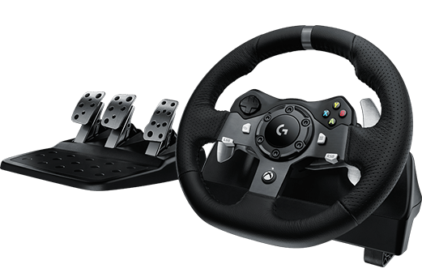
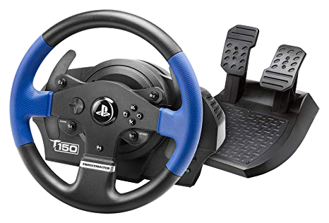
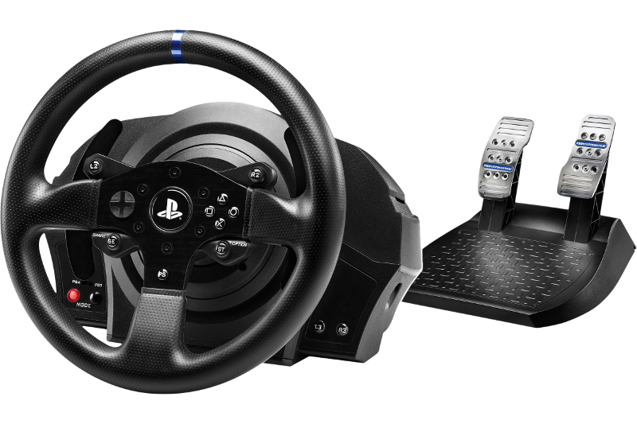
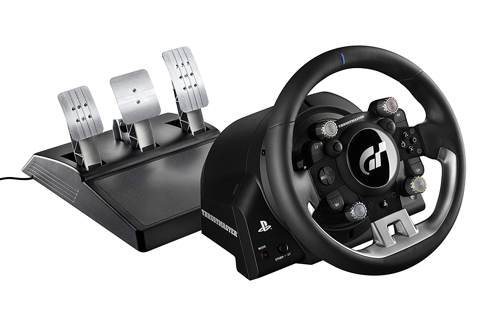
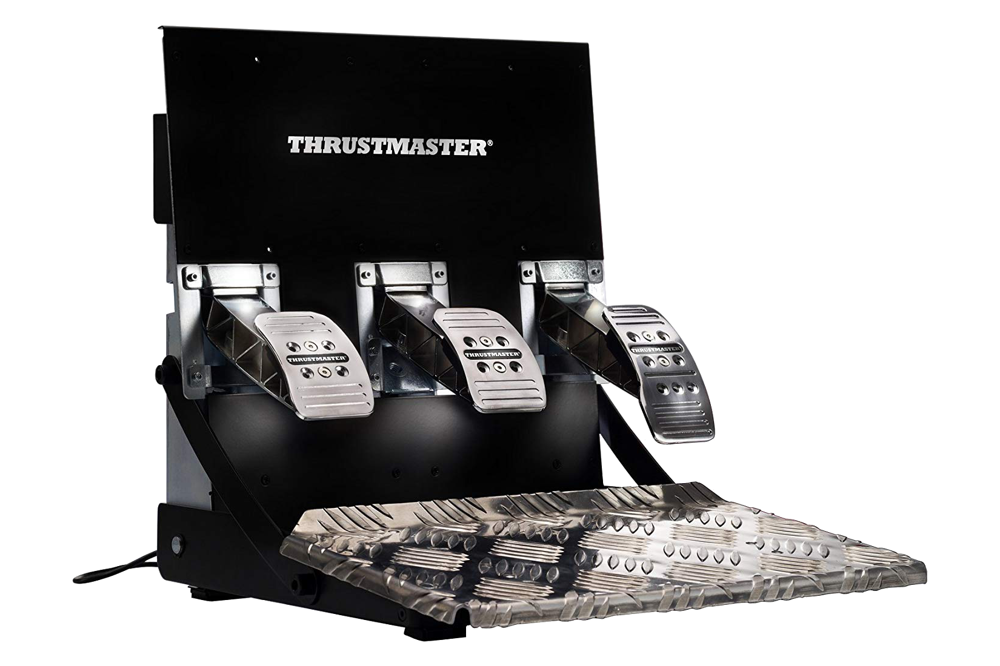
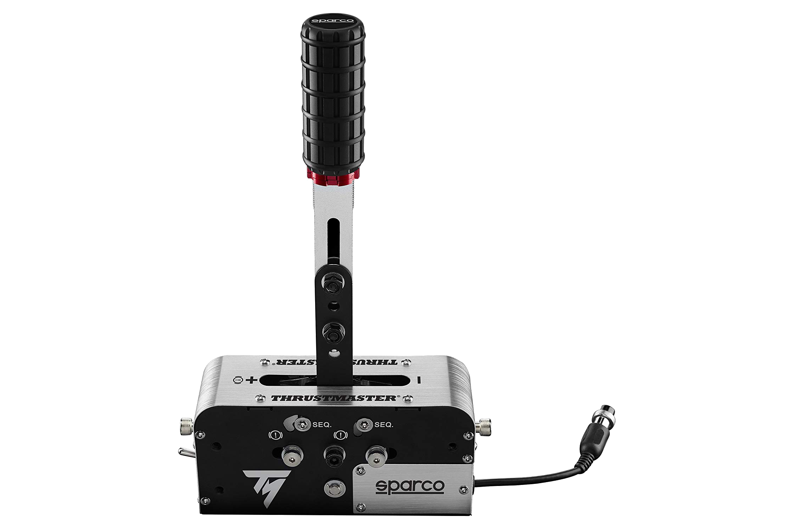
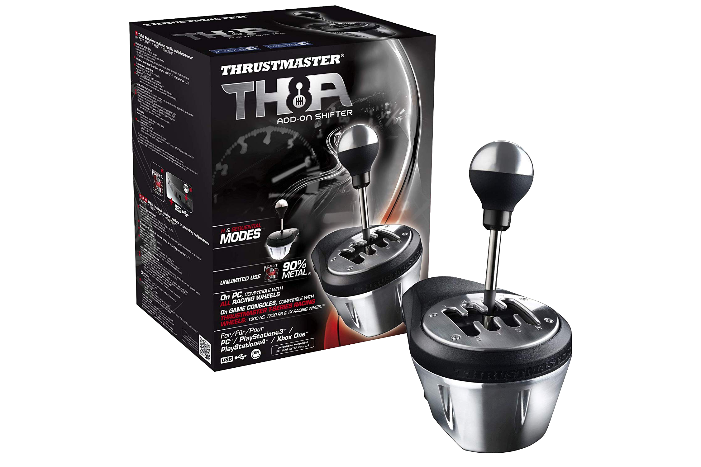
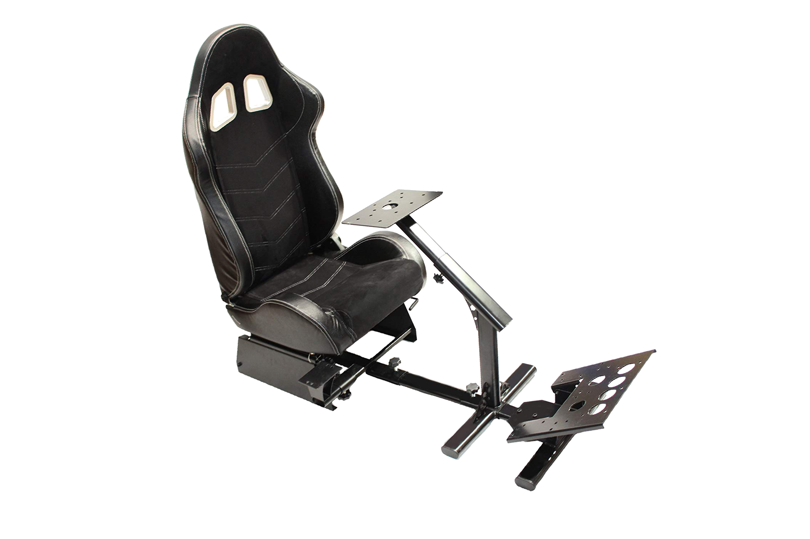
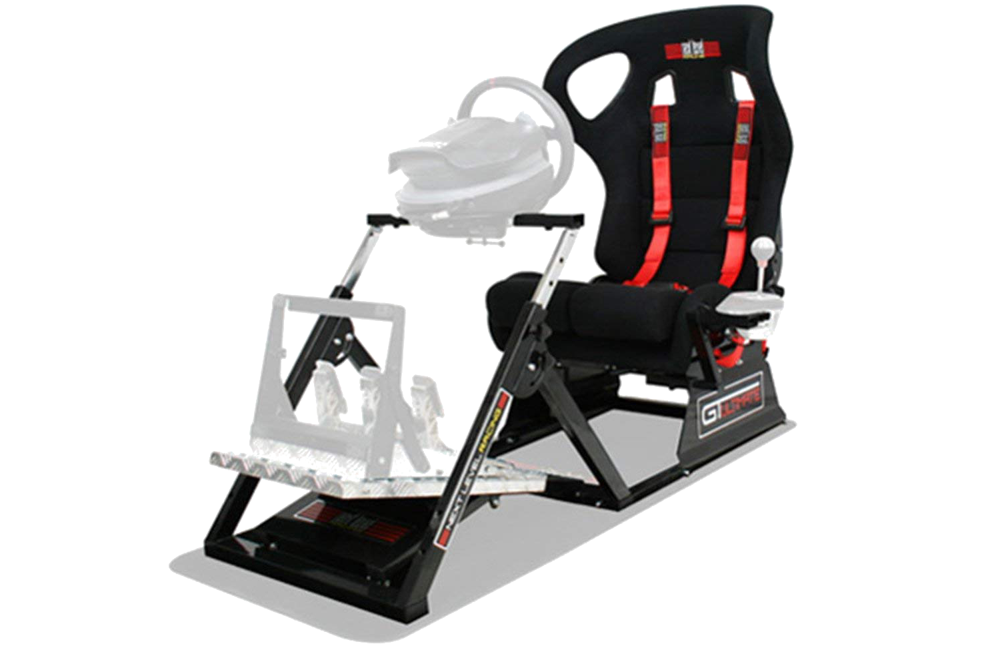
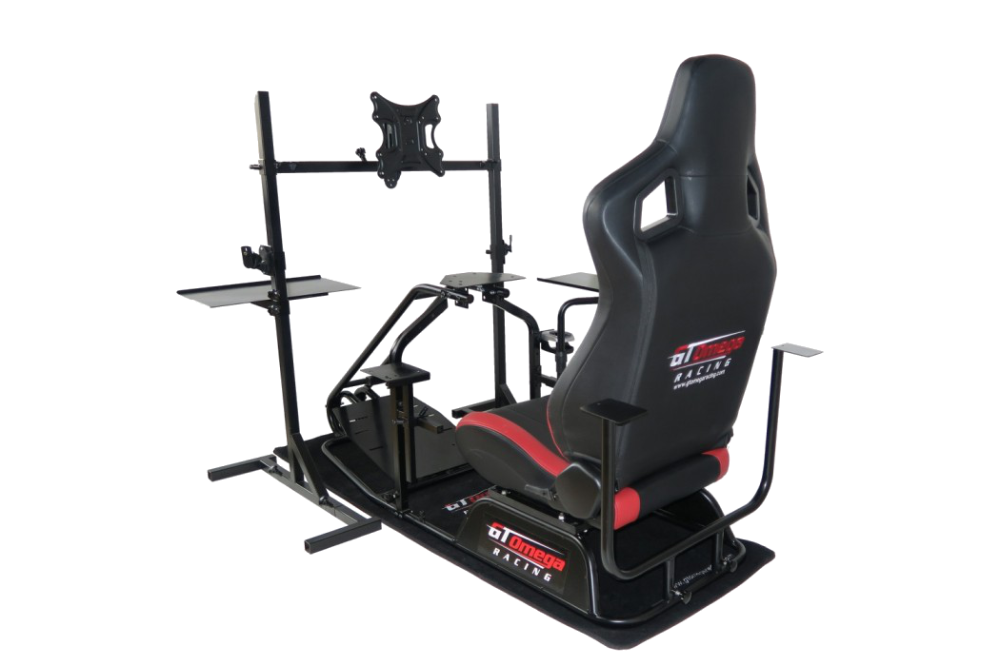

| VOLANTES |
| Volante G29 |
- Base Force Feedback 900°.
- Incluye tecnología de conectividad alámbrico.
- Interfaz del dispositivo con USB 2.0.
- Controles integrados en el volante.
- Compatibilidad con juegos para PS3, PS4 y PC.
|
199€ |
| Volante Thrustmaster T150 |
- Base Force Feedback 900° con motor Brushless.
- Interfaz del dispositivo con USB 2.0.
- Controles integrados en el volante.
- Compatibilidad con juegos para PS4 y PC.
|
210€ |
| Volante Thrustmaster T1300Rs |
- Base Force Feedback 1080° con motor Brushless de clase industrial.
- Volante de carreras de 28 cm de diámetro, desmontable y realista, que incluye
recubrimiento reforzado con textura de goma en toda su circunferencia.
- 2 levas grandes fijas de cambio de marchas en el volante de carreras .
- Motor brushless de clase industrial .
- Compatibilidad con juegos para PS3, PS4 y PC.
|
260€
|
| Thrustmaster T-GT |
- Tecnología T-DFB exclusiva (Depth Feedback), desarrollada para Gran Turismo Sport, creada para producir sensaciones intensas.
- Un concentrado de tecnologías para ofrecer una experiencia realista en la simulación
de carreras. El comportamiento del coche y las condiciones del circuito se reproducen con fidelidad.
- El volante desmontable está fabricado con la piel de textura más suave y fina para garantizar la comodidad máxima.
- El motor T-40VE ofrece un potente Force Feedback brushless LINEAL de 40 vatios y una velocidad increíble (par de torsión dinámico).
- Compatibilidad con juegos para PS3, PS4 y PC.
|
620€
|
| PERIFÉRICOS |
| Pedalera Thrustmaster T3PA Pro 3 |
- Posición montada sobre el suelo (estilo F1). Posición suspendida (estilo GT).
- Incluye reposapiés grande metálico con rejilla no deslizante.
- Estructura metálica interna y externa (para obtener la máxima solidez).
- Pesa más de 7 kg (para lograr una estabilidad óptima).
- 100% ajustable.
- Rango de recorrido y fuerza de presión ajustables del pedal del freno.
- Incluye 2 brake mods desmontables diferentes para el pedal del freno.
|
150€
|
| ThrustMaster - TSS Freno de Mano y Cambio Secuencial |
- El TSS HANDBRAKE Sparco Mod es un dispositivo 2 en 1 que ofrece dos modos: freno de mano progresivo y cambio de marchas secuencial.
- El pomo es la réplica exacta (escala 1:1, 8,5 cm de altura) del pomo genuino que equipan los productos de la gama de rallyes
y drift de Sparco, para garantizar el máximo realismo.
- El TSS HANDBRAKE Sparco Mod incorpora la tecnología H.E.A.R.T: HallEffect AccuRate Technology de Thrustmaster.
- El TSS HANDBRAKE Sparco Mod incluye un 90% de componentes metálicos de alta calidad (acero y aluminio), que garantizan una solidez óptima.
- Palanca de freno de mano ajustable en posición horizontal (modoGT) o en posición vertical (modo Rally).
|
260€
|
| Palanca Thrustmaster TH8A SHIFTER |
- Palanca de cambio de 13 cm de alto con pomo.
- Sensación realista de cambio de marchas.
- Compatible con los pomos universales reales.
- Mecanismo interno 100% metálico.
- Precisión que no se reduce con el tiempo (sensor magnético sin contactos). Sin tact switch ni potenciómetro (para lograr una vida útil ilimitada del producto).
- Posición y rotación de la placa de cambio y anclajes ajustables en 360°.
|
260€
|
| PLAYSEAT |
| MODAUTO N810B-N320 |
- El chasis es totalmente sólido, no te preocupes por frenar fuerte o girar el volante bruscamente.
- Compatible con todos los conjuntos de volante y pedal.
- Marco revestido durable completamente ajustable.
- Utilizado por los conductores de carreras profesionales.
- Fácil de montar y almacenar debido a su diseño plegable patentado.
|
280€
|
| Racing GT Ultimate V2 |
- Pedal de marchas rueda, completamente ajustable y posiciones .
- Su diseño patentado permite cabina con separado en dos mitades y se pliegan para facilitar su almacenamiento .
- Rock Solid cabina de peso 45 kg.
- Diseñado para una comodidad, Custom reclinable de fibra de vidrio Race asiento incluyendo cojín lumbar e incluso Racing arnés de 4 puntos.
- Compatible con todos los principales volante y pedales. perforados para Logitech, Thrustmaster y fanatec ruedas.
|
760€
|
| COCKPIT – GT OMEGA PRO RACING RS6 |
- Pedal de marchas rueda, completamente ajustable y posiciones .
- Asiento baquet para Next Level Racing Wheel stand.
- Arnés deporte de 4 puntos de fijación.
- Diseñado para una comodidad, Custom reclinable de fibra de vidrio Race asiento incluyendo cojín lumbar e incluso Racing arnés de 4 puntos.
- Un chasis robusto, con montaje sencillo, totalmente regulable, construido en perfil de aluminio de alta resistencia de 45/90 mm y ensamblado en acero de 4mm..
|
1150€
|